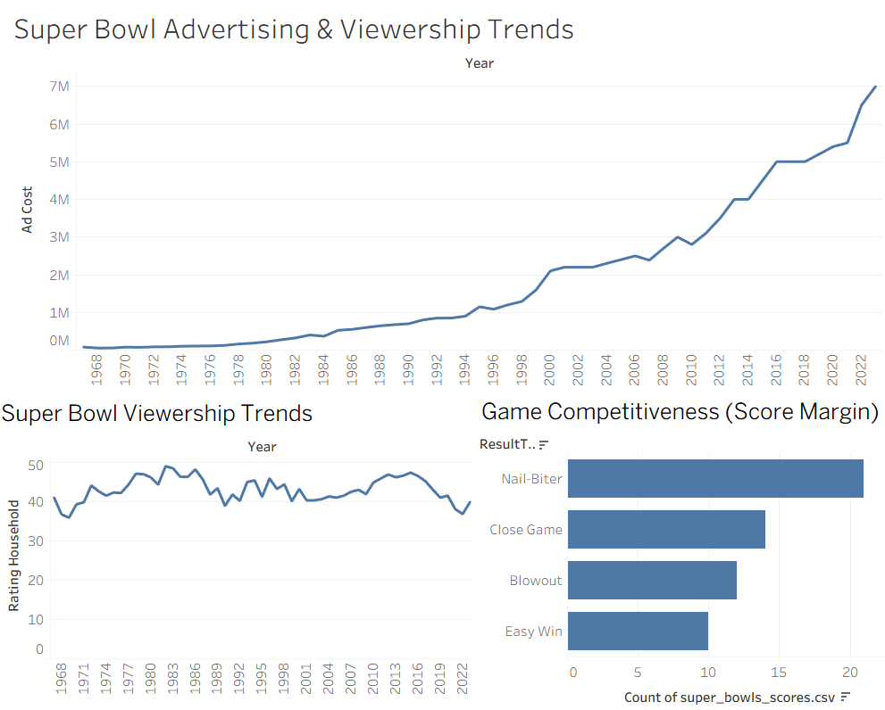
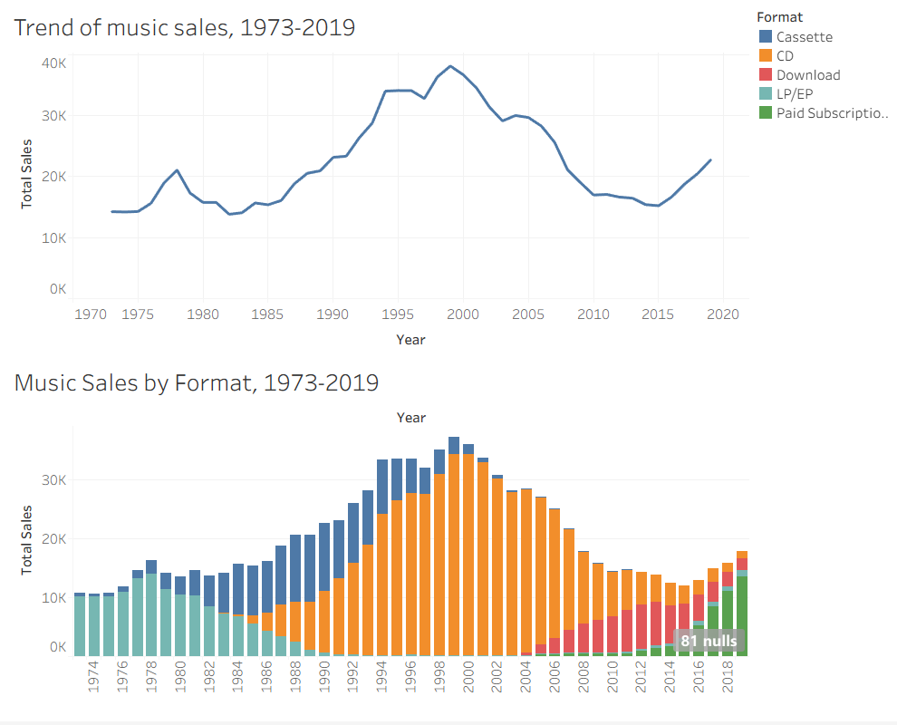
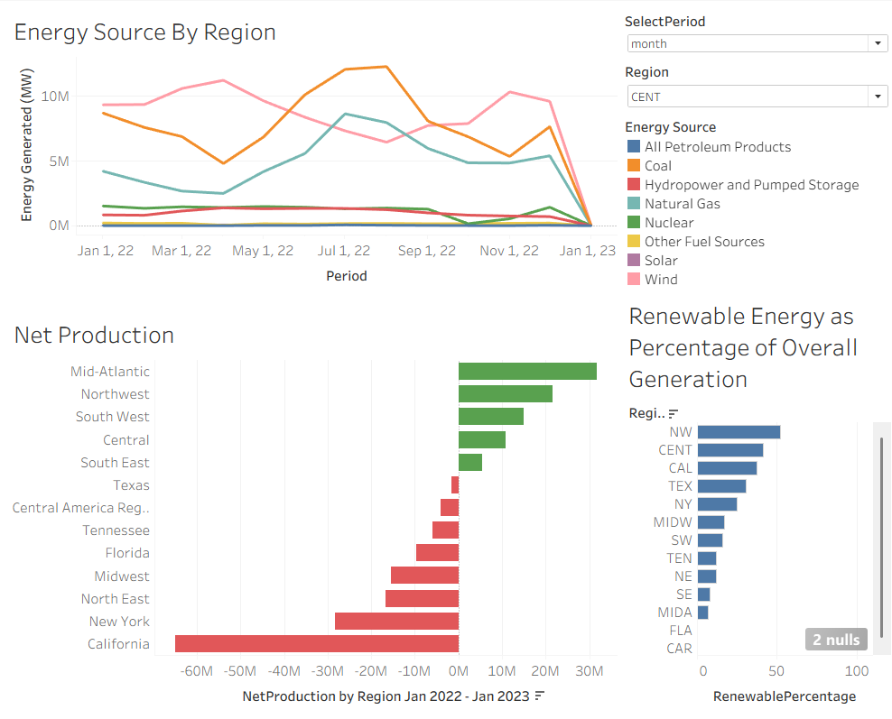

Beyond Work
Outside of finance, I’m heavily involved in training and fitness. I’ve competed in powerlifting and held state records, which taught me the value of consistency, structure, and tracking progress over time.

Finance student focused on data analysis and building practical business insights.
I’m a Finance major at Northern Arizona University focused on using data to understand performance, identify trends, and support better business decisions. I’ve built experience working with Excel and Tableau to analyze real datasets and communicate insights clearly.
Outside of academics, I’m highly disciplined through powerlifting, where I’ve developed strong habits around consistency, tracking progress, and long-term improvement. That same mindset carries into my work with data and my approach to learning.
Maintained efficient store operations in a fast-paced environment by assisting customers, organizing inventory, and supporting team needs during high-traffic periods.
Worked across multiple stations during high-volume shifts, managing orders while maintaining speed and accuracy. Developed strong teamwork and communication skills under pressure.
Built a Tableau dashboard analyzing Super Bowl ad costs, TV ratings, and game competitiveness over time.
Insight: Ad costs have increased significantly over time, while viewership has remained relatively stable, suggesting diminishing returns on advertising spend.

View Interactive DashboardCreated a Tableau dashboard to analyze long-term trends in music sales and how formats have shifted over time.
Insight: Physical formats like CDs and cassettes declined significantly after the early 2000s, while digital and streaming-based formats grew, showing a major shift in consumer behavior.

View Interactive DashboardDeveloped a Tableau dashboard to explore energy production trends across regions and energy sources over time.
Insight: Natural gas and renewable sources have grown in share over time, while traditional sources like coal have declined, reflecting shifts in energy policy and demand.

View Interactive DashboardAnalyzed an A/B test comparing two email subject lines using Excel. Built pivot tables to calculate open rates across control and test groups and evaluated performance differences.
Insight: The test group showed a higher open rate, but results emphasized the importance of sample size and potential external factors when interpreting A/B test outcomes.
Used Excel pivot tables to analyze delivery performance across cities and cuisine types. Evaluated average delivery time, order volume, and pricing to identify patterns in operations.
Insight: Delivery time and order volume varied across locations and cuisines, showing how regional demand impacts efficiency and service performance.
Analyzed a large dataset of trending YouTube videos using Excel. Cleaned and filtered data, then examined views, categories, and overall performance patterns.
Insight: Video performance is highly skewed, with a small number of videos generating a majority of total views, highlighting the importance of standout content.
Outside of finance, I’m heavily involved in training and fitness. I’ve competed in powerlifting and held state records, which taught me the value of consistency, structure, and tracking progress over time.
Email: ryanhicks06@hotmail.com
Phone: (623) 606-9696